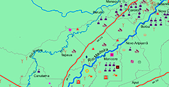
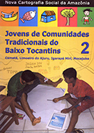
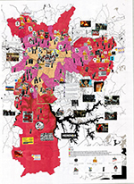
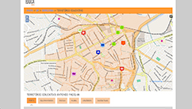
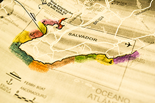
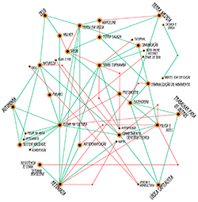
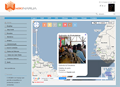
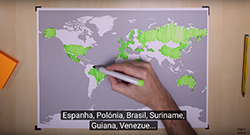
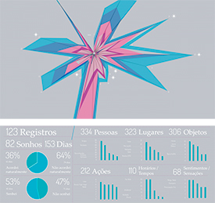

Inicialmente relacionada à Geografia, hoje a cartografia é utilizada de diferentes formas e em diversas áreas do conhecimento, seja como forma de sistematização visual de dados, seja como metodologia de pesquisa, mobilização e intervenção, ou mesmo como processo de investigação sensível e criativa.
A seguir, selecionamos alguns exemplos de cartografia que demonstram, na prática, os vários usos e diferentes potenciais desse tipo de metodologia.
1. Nova Cartografia Social da Amazônia
Autocartografias de povos e comunidades tradicionais do Brasil
Coordenado por antropólogos ligados à Universidade do Estado do Amazonas (UEA), o projeto utiliza-se de métodos de cartografia social para ampliar o conhecimento dos povos tradicionais e seus territórios, bem como capacitá-los no uso de novas tecnologias, como softwares e técnicas de GPS, que os auxiliem a acompanhar os efeitos da devastação ambiental e dos desmatamentos provocados pela expansão do agronegócio.
A metodologia envolve a construção de cartografias em que técnicos e comunidade se unem na criação de mapas colaborativos que revelam não apenas aspectos físicos, mas também relações de poder e os elementos simbólicos, ancestrais e históricos que compõem a identidade local. Primeiramente aplicado nas regiões amazônicas, o projeto foi estendido a outras partes do país e já realizou trabalhos de cartografia social nas comunidades quilombolas, com jovens e adolescentes de comunidades tradicionais, pescadores, ribeirinhos, catadores, afrorreligiosos, entre outros. No site, é possível ter acesso a uma série de fascículos, organizados em seis séries, referentes ao trabalho de pesquisa realizado entre março de 2005 e janeiro de 2009.
Veja uma videorreportagem sobre o projeto.
2. São Paulo Ocupada
Uma cartografia das juventudes insurgentes na cidade de São Paulo
As diferentes manifestações de cunho político e cultural protagonizadas por movimentos jovens na cidade de São Paulo nos últimos anos é o tema central da cartografia São Paulo Ocupada.
Organizada com base em memórias, fotos e relatos de jovens participantes de manifestações de rua, “rolezinhos”, ocupações de escolas e centros culturais, a cartografia sistematiza os diferentes elementos de tais manifestações e também evidencia características que elas possuíam em comum. Dessas, o trabalho destacou o caráter autônomo e apartidário desses movimentos, a influência da histórica construção de movimentos na periferia, o questionamento indireto ao crescente processo de privatização dos espaços públicos e o impacto que as jornadas de junho tiveram na articulação política de estudantes secundaristas.
Acesse o documento em versão interativa.
3. CulturaEduca
Territórios educativos em mapeamento colaborativo
O Portal CulturaEduca é uma ferramenta on-line que disponibiliza, por meio de mapas colaborativos, informações sobre oportunidades socioculturais localizadas no entorno de escolas de todo o Brasil. O intuito da ferramenta é fortalecer os elos comunitários e provocar múltiplas possibilidades de aprendizagem. Por meio de uma tecnologia de mapeamento colaborativo, qualquer usuário pode inserir e editar informações. No contexto da cartografia social, as informações dos mapas participativos podem ser usadas pela comunidade como uma oportunidade para a reflexão sobre o território. A iniciativa é resultado do projeto Mapeamento das Iniciativas de Cultura e Educação, parceria entre o Instituto Lidas, a Secretaria de Políticas Culturais do Ministério da Cultura (MinC) e a Secretaria de Educação Básica do Ministério da Educação (MEC).
Conheça os recursos da plataforma.
Veja aqui o vídeo explicativo.
4. Ma:res
Percepção do mar como cartografia artística
Ma:res é uma cartografia artística do mar do entorno da cidade de Salvador. Foi elaborada pelo coletivo Ecoarte, grupo de experimentação artística coordenado pela professora Karla Schuch Brunet, do Instituto de Humanidades, Artes e Ciências (IHAC) da Universidade Federal da Bahia (UFBA), como proposta de mapa conceitual, no qual se navega pelo imaginário e por percepções particulares do mar. Vídeos foram coletados ao longo da orla marítima de Salvador, representando as palavras dadas como resposta às questões da entrevista: “O que é o mar para você? Qual é o sentido do mar na sua vida?”. No projeto final, é possível encontrar um mar de palavras e sentidos muitas vezes esquecidos no dia a dia corrido da cidade. O projeto tenta, dessa forma, resgatar os sentimentos de percepção do mar.
5. Tupi Vivo
Cartografia afetiva com os tupinambás do sul da Bahia
Os tupinambás de Olivença são indígenas que vivem no sul da Bahia, entre os municípios de Ilhéus, Una e Buerarema. Assim como muitos outros povos indígenas no país, a comunidade de mais de 6 mil tupinambás luta atualmente pela demarcação oficial de suas terras.
O projeto Tupi Vivo é uma cartografia afetiva realizada em colaboração com esses povos, com o intuito de levantar os sentidos particulares que tais populações atribuem à sua própria cultura e à sua relação com o território. É um trabalho-fronteira entre arte, ciência e ativismo que gerou uma série de vídeos disponíveis on-line. O projeto fez parte da iniciativa Bolsa Interações Estéticas ‒ Residências Artísticas em Pontos de Cultura 2012, elaborado com a colaboração de Bruno Tarin, Jaborandy Yande, Laila Sandroni, Ponto de Cultura Indígena: Mensageiros da Terra - Thydêwá e Tupinambá de Olivença.
6. Wikinarua
Plataforma aberta para cartografia colaborativa
Wikinarua é um projeto de cartografia colaborativa criado na Universidade de Brasília (UnB). Mostra-se uma ferramenta muito eficaz na mobilização de comunidades, já que funciona como uma rede social que pode ser acionada com dispositivos móveis e celulares com tecnologia de Realidade Urbana Aumentada (RUA). A plataforma permite que pessoas em qualquer lugar do país possam participar da comunidade virtual organizando conteúdos no mapa, como imagens, sons, textos, vídeos e até rádio. A tecnologia de Realidade Aumentada traz conteúdos on-line para o espaço real, ou seja, ao apontar o celular para determinado ponto na cidade (demarcado no mapa Wikinarua), o software funde, numa mesma imagem, dados reais e informações computacionais, em tempo real.
7. WhyMaps (Por que mapas?)
Série de vídeos que associa novas narrativas, política e pensamento cartográfico
Esse canal do YouTube criado pelos espanhóis Bruno Teixidor e Sergio de Pazos, cineasta e web designer, respectivamente, é uma iniciativa que busca conciliar os potenciais educativos da cartografia com a compreensão de fenômenos sociais e políticos. Com vídeos de aproximadamente 10 minutos, temas como a guerra na Síria ou os sistemas de representação políticos pelo mundo são explicados com sintéticas e sistemáticas representações visuais.
WhyMaps estreou em outubro de 2015 e, em menos de 12 dias, alcançou 18 milhões de reproduções de seu primeiro vídeo, #WhySiria, pelas redes sociais.
Conheça os vídeos do canal, que contam com legendas em português.
8. Somnium
Mapeando sonhos
Somnium é um projeto de visualização de dados que buscou mapear informações de um tema pouco usual: o universo dos sonhos.
A criação surgiu do interesse em trabalhar dados que são gerados a partir da coleta e sistematização de atividades realizadas diretamente pelas pessoas, na perspectiva da técnica Lifelog. O método consistiu na anotação sistemática de palavras-chave, após cada sonho, divididas em categorias como lugares, pessoas, objetos, horários do dia, ações, sentimentos e sensações. O resultado de cinco meses de registros são cartografias que ilustram visualmente experiências pessoais efêmeras que compõem um registro de tempo e memória concreto e compartilhável. O projeto faz parte do Laboratório da Visualidade e Visualização (LabVis) da Escola de Belas Artes da Universidade Federal do Rio de Janeiro (EBA-UFRJ), sob coordenação de Doris Kosminsky.
9. OBSERVATÓR!O 2016
Monitoramento e visualização dos Jogos Olímpicos Rio 2016
Outra forma de organizar informações por meio da cartografia é realizando a coleta e a sistematização de dados disponíveis na internet. Essa estratégia foi utilizada pelo Laboratório de Visão Gráfica do Instituto de Matemática Pura Aplicada (Impa), que fez um projeto de monitoramento de fatos e comentários mais compartilhados sobre os últimos Jogos Olímpicos, realizados no Brasil. No OBSERVATÓR!O 2016, é possível visualizar quais modalidades incitaram mais interações no mundo virtual, as notícias e fotos mais compartilhadas, bem como os temas que geraram mais polêmicas. O portal está produzindo mapas visuais desde março de 2016 e continuará como uma maneira de preservar a memória dos Jogos do Rio de Janeiro.